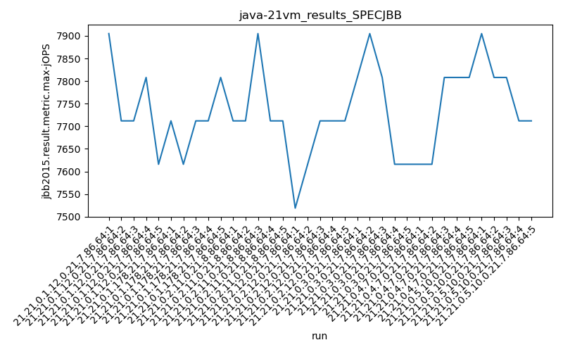
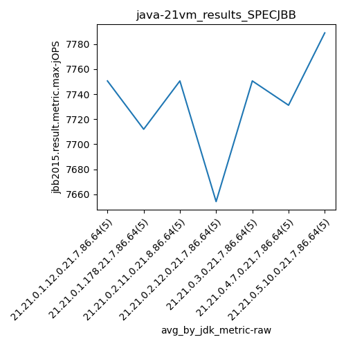
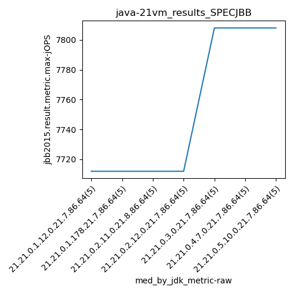
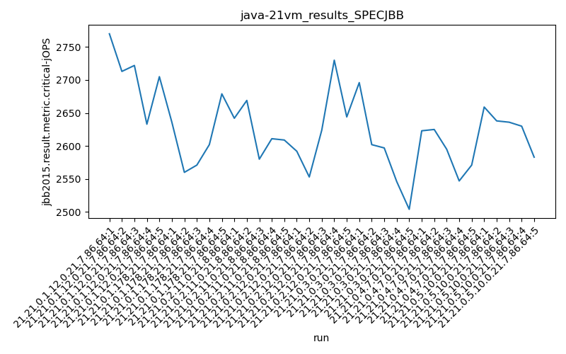

java-21 SPECJBB
Context at bottom
/home/jvanek/git/benchmarks-in-nested-virtualisation-toolchain/final_results/vm_results/vm_results_RADARGUNs1
java-21
SPECJBB
/home/jvanek/git/benchmarks-in-nested-virtualisation-toolchain/final_results/vm_results/vm_results_RADARGUNs3
java-21
SPECJBB
/home/jvanek/git/benchmarks-in-nested-virtualisation-toolchain/final_results/vm_results/vm_results_DACAPO
java-21
SPECJBB
/home/jvanek/git/benchmarks-in-nested-virtualisation-toolchain/final_results/vm_results/vm_results_J2DBENCH
java-21
SPECJBB
/home/jvanek/git/benchmarks-in-nested-virtualisation-toolchain/final_results/vm_results/vm_results_SPECJBB
java-21
SPECJBB
vm_results_SPECJBB
- vm_results_SPECJBB - max-jops
- vm_results_SPECJBB - critical jops
vm_results_SPECJBB - max-jops
Expected number of java-21 JDKs: 7
1st avgmed_alljdks_metric:
/home/jvanek/git/benchmarks-in-nested-virtualisation-toolchain/final_results/result_processing.py /home/jvanek/git/benchmarks-in-nested-virtualisation-toolchain/final_results/vm_results/vm_results_SPECJBB jbb2015.result.metric.max-jOPS False
values: [7905, 7712, 7712, 7808, 7616, 7712, 7616, 7712, 7712, 7808, 7712, 7712, 7905, 7712, 7712, 7519, 7616, 7712, 7712, 7712, 7808, 7905, 7808, 7616, 7616, 7616, 7616, 7808, 7808, 7808, 7905, 7808, 7808, 7712, 7712]

Expected number of iterations: 5
final number of values: 35 out of 35
Pass rate: 100.0%
values: (7519, 7905, 7734.028571428571, 7712)

** accuracy from all jdks and runs
more is better
MIN: 7519
MAX: 7905
AVG: 7734.028571428571
MED: 7712
Relative differences 1:
MIN-MAX: 5.0 %
MIN-AVG: 3.0 %
MIN-MED: 3.0 %
MAX-MIN: -5.0 %
MAX-AVG: -2.0 %
MAX-MED: -3.0 %
AVG-MED: -0.0 %
stored to java-21.properties. sort | uniq that!
2nd avgmed_by_jdk_metric:
values: [7750.6, 7712.0, 7750.6, 7654.2, 7750.6, 7731.2, 7789.0]

values: [7712, 7712, 7712, 7712, 7808, 7808, 7808]

values: (7654.2, 7789.0, 7734.028571428571, 7750.6)
values: (7712, 7808, 7753.142857142857, 7712)

** accuracy from all jdks where runs were avged
more is better
MIN: 7654.2
MAX: 7789.0
AVG: 7734.028571428571
MED: 7750.6
Relative differences 1:
MIN-MAX: 2.0 %
MIN-AVG: 1.0 %
MIN-MED: 1.0 %
MAX-MIN: -2.0 %
MAX-AVG: -1.0 %
MAX-MED: -0.0 %
AVG-MED: 0.0 %
stored to java-21.properties. sort | uniq that!
** accuracy from all jdks where runs were medianed
more is better
MIN: 7712
MAX: 7808
AVG: 7753.142857142857
MED: 7712
Relative differences 1:
MIN-MAX: 1.0 %
MIN-AVG: 1.0 %
MIN-MED: -0.0 %
MAX-MIN: -1.0 %
MAX-AVG: -1.0 %
MAX-MED: -1.0 %
AVG-MED: -1.0 %
stored to java-21.properties. sort | uniq that!
vm_results_SPECJBB - critical jops
Expected number of java-21 JDKs: 7
1st avgmed_alljdks_metric:
/home/jvanek/git/benchmarks-in-nested-virtualisation-toolchain/final_results/result_processing.py /home/jvanek/git/benchmarks-in-nested-virtualisation-toolchain/final_results/vm_results/vm_results_SPECJBB jbb2015.result.metric.critical-jOPS False
values: [2770, 2713, 2722, 2633, 2705, 2636, 2560, 2571, 2602, 2679, 2642, 2669, 2580, 2611, 2609, 2592, 2553, 2624, 2730, 2644, 2696, 2602, 2597, 2546, 2504, 2623, 2625, 2595, 2547, 2571, 2659, 2638, 2636, 2630, 2583]

Expected number of iterations: 5
final number of values: 35 out of 35
Pass rate: 100.0%
values: (2504, 2770, 2625.6285714285714, 2624)

** accuracy from all jdks and runs
more is better
MIN: 2504
MAX: 2770
AVG: 2625.6285714285714
MED: 2624
Relative differences 1:
MIN-MAX: 10.0 %
MIN-AVG: 5.0 %
MIN-MED: 5.0 %
MAX-MIN: -11.0 %
MAX-AVG: -6.0 %
MAX-MED: -6.0 %
AVG-MED: -0.0 %
stored to java-21.properties. sort | uniq that!
2nd avgmed_by_jdk_metric:
values: [2708.6, 2609.6, 2622.2, 2628.6, 2589.0, 2592.2, 2629.2]

values: [2713, 2602, 2611, 2624, 2597, 2595, 2636]

values: (2589.0, 2708.6, 2625.628571428571, 2622.2)
values: (2595, 2713, 2625.4285714285716, 2611)

** accuracy from all jdks where runs were avged
more is better
MIN: 2589.0
MAX: 2708.6
AVG: 2625.628571428571
MED: 2622.2
Relative differences 1:
MIN-MAX: 4.0 %
MIN-AVG: 1.0 %
MIN-MED: 1.0 %
MAX-MIN: -5.0 %
MAX-AVG: -3.0 %
MAX-MED: -3.0 %
AVG-MED: -0.0 %
stored to java-21.properties. sort | uniq that!
** accuracy from all jdks where runs were medianed
more is better
MIN: 2595
MAX: 2713
AVG: 2625.4285714285716
MED: 2611
Relative differences 1:
MIN-MAX: 4.0 %
MIN-AVG: 1.0 %
MIN-MED: 1.0 %
MAX-MIN: -5.0 %
MAX-AVG: -3.0 %
MAX-MED: -4.0 %
AVG-MED: -1.0 %
stored to java-21.properties. sort | uniq that!
/home/jvanek/git/benchmarks-in-nested-virtualisation-toolchain/final_results/vm_results/vm_results_JMH
java-21
SPECJBB
pass rates:
vm_results_SPECJBB=100.0%
Context:
- vm_results
- SPECJBB